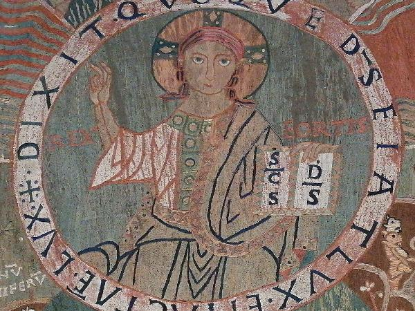

The Center Circle

The center circle shows the familiar image of “Christ in Majesty” or “Christ the Ruler of All (Pantocrator)”. A richly-robed, seated Christ holds holds a holy book in his left hand labeled as S(an)c(tu)s D(eu)s (Holy God) and has his right hand raised in a gesture of teaching or blessing. On each shoulder are the words Rex Fortis(Strong King).
Unlike many medieval Christ in Majesty images, this Christ is youthful (no beard) and engaging, not distant and mysterious. He seems to be staring right at us. He wants to be our friend, but his hands are full reigning over everything.
Surrounding the circle in a white border (in a clockwise direction starting at 9 o’clock) are the words Dixit quoque D(eu)s fiat lux et facta e(st) lux (And God said, “let there be light,” and there was light), the beginning of the Creation story in Genesis 1.
Here is the Vulgate passage with a translation from this web site.
| 1 In principio creavit Deus caelum et terram 2 terra autem erat inanis et vacua et tenebrae super faciem abyssi et spiritus Dei ferebatur super aquas 3 dixitque Deus fiat lux et facta est lux | 1 In the beginning God created heaven, and earth. 2 And the earth was void and empty, and darkness was upon the face of the deep; and the spirit of God moved over the waters. 3 And God said: Be light made. And light was made. |
|---|